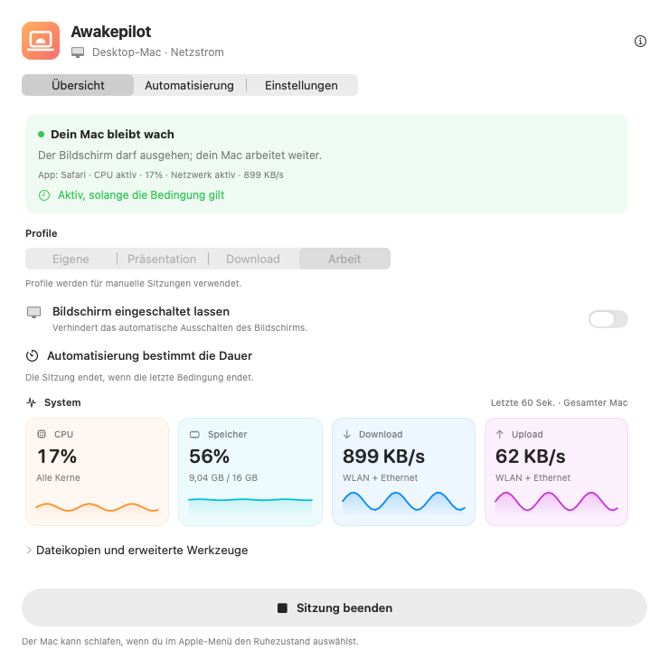
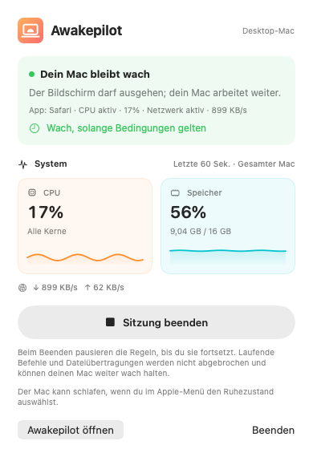
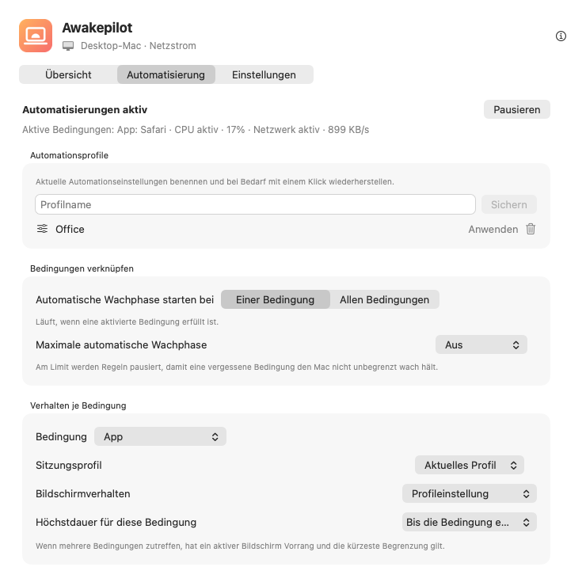

Flexible Wachhalte-Sitzungen
Bleibe unbegrenzt, für eine bestimmte Dauer oder bis zu einem exakten Datum und einer Uhrzeit wach.
15m1h2h∞
Lass Builds, Videoexporte und große Dateiübertragungen ohne automatischen Ruhezustand weiterlaufen. Wähle eine Dauer oder Bedingungen. Awakepilot beendet das Wachhalten, wenn die Zeit abläuft oder die Bedingungen nicht mehr gelten, sofern keine andere aktive Aufgabe es noch benötigt.


Wähle eine Dauer oder lege fest, unter welchen Bedingungen eine Sitzung startet. Wenn Awakepilot das Wachhalten beendet, gelten die Ruhe-Einstellungen deines Mac; er schläft nicht sofort ein.
Bleibe unbegrenzt, für eine bestimmte Dauer oder bis zu einem exakten Datum und einer Uhrzeit wach.
Beobachte CPU, Speicher sowie Download- und Upload-Aktivität in übersichtlichen Live-Diagrammen.
Wähle zuerst, was beobachtet werden soll. Halte deinen Mac wach, solange eine App geöffnet ist, ein Prozess läuft oder ein gewähltes Laufwerk verbunden ist.
Berücksichtige Netzteile, Akkugrenzen, USV-Status und Bildschirmeinstellungen.
Drive Alive hilft, ein gewähltes externes Laufwerk aktiv zu halten, indem es seine eigene kleine versteckte Datei regelmäßig aktualisiert.
Sieh, wann das Wachhalten begann, welche Bedingungen aktiv waren und wann es endete.

Sieh die Apps, Prozesse und weiteren Bedingungen, die deinen Mac wach halten. Gelten deine Regeln nicht mehr und benötigt keine andere aktive Aufgabe das Wachhalten, kann dein Mac seine normalen Ruhe-Einstellungen verwenden.
Eine geöffnete App beweist nicht, dass darin noch eine Aufgabe läuft. Weniger CPU- oder Netzwerkaktivität bestätigt ebenfalls keinen Abschluss.
Wähle, was Awakepilot beobachtet, wie sich der Bildschirm verhält und wie lange der Mac wach bleibt. Prüfe aktive Bedingungen und letzte Änderungen in der App.
Starte im Studio-Netzwerk oder Arbeits-VPN. Halte den Bildschirm für Anrufe bereit und beende die Sitzung am Sicherheitslimit.
Beobachte den Exportprozess anhand seines Namens und erlaube die Bildschirmruhe. Nach Prozessende endet das Wachhalten, sofern keine andere Regel oder Aufgabe es noch benötigt.
Reagiere auf das Einbinden eines Archivlaufwerks, schütze den Kopiervorgang und nutze Drive Alive nur auf dem ausgewählten beschreibbaren Volume.
Starte bei einer erfüllten Bedingung oder verlange alle gewählten Bedingungen gleichzeitig. Zum Beispiel nur im Büro-WLAN und mit angeschlossenem externem Laufwerk.
Awakepilot aktualisiert eine kleine Markierungsdatei auf den von dir gewählten beschreibbaren externen Laufwerken. Es überschreibt niemals Dateien anderer Apps und entfernt die eigene Markierung, wenn Drive Alive deaktiviert wird – auch nach dem erneuten Verbinden eines Laufwerks.
Ein Wachhalte-Werkzeug sollte keine Fragen offenlassen. Awakepilot protokolliert wichtige Übergänge, ohne den Verlauf mit jeder CPU- oder Netzwerkprobe zu überladen.
Beobachte Netzwerkaktivität oder ein verbundenes Backup-Laufwerk. Die Bedingung endet, wenn die Aktivität lange genug unter dem Grenzwert bleibt oder das Laufwerk getrennt wird.
Beobachte einen Terminal-Prozess anhand seines Namens oder halte deinen Mac wach, solange ein Befehl läuft.
Nutze ein Profil mit aktivem Bildschirm nur, solange die Präsentationsbedingung erfüllt ist.
Halte den Mac erreichbar, während Strom- und Zeitlimits weiterhin gelten.
Kein Konto. Keine Werbung. Keine Analysen. Keine Telemetrie. Awakepilot speichert seine Einstellungen lokal und kontaktiert GitHub nur zur Suche nach Updates.
Datenschutzdetails lesen →Lade den signierten und von Apple notarisierten Universal-Build für macOS.
In den Programme-Ordner ziehen. Kein Konto oder Abonnement erforderlich.